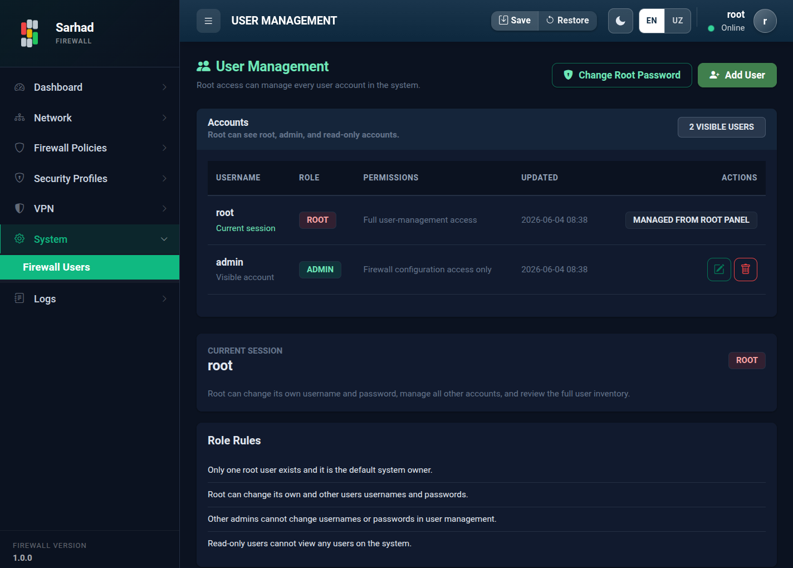

1. Foydalanuvchilarni boshqarish
Bu sahifa boshqaruv paneliga kirish huquqiga ega foydalanuvchi hisoblarini
boshqaradi. Bu bo’limga o’tish uchun chap menyudan System → Firewall Users
bo’limini tanlang (/user-mgmt).
{kind=link}

1.1. Rollar va ruxsatlar
Tizimda uchta rol mavjud. Har bir rol turli ruxsat va ko’rish darajasiga ega:
Rol |
Ruxsatlari |
Ko’rish darajasi |
|---|---|---|
Root |
Foydalanuvchilarni to’liq boshqarish (Full user-management access): hisob yaratish, tahrirlash, o’chirish, har qanday nom va parolni o’zgartirish. |
Barcha hisoblarni ko’radi. |
Admin |
Faqat firewall konfiguratsiyasiga kirish (Firewall configuration access
only). Faqat |
Faqat |
Read-only |
Faqat ko’rish (View-only access): holat va sozlamalarni ko’radi, lekin o’zgartira olmaydi. |
Foydalanuvchilar ro’yxatini umuman ko’ra olmaydi. |
1.1.1. Rol qoidalari
Tizimda faqat bitta root foydalanuvchi mavjud va u tizimning standart egasi.
Root o’z va boshqa foydalanuvchilarning nomlari va parollarini o’zgartira oladi.
Boshqa adminlar foydalanuvchi boshqaruvida nom va parollarni o’zgartira olmaydi.
Read-only foydalanuvchilar tizimdagi hech qanday foydalanuvchini ko’ra olmaydi.
1.2. Hisoblar jadvali
Accounts jadvalida ko’rinadigan foydalanuvchilar ro’yxati keltiriladi: Username (nom), Role (rol), Permissions (ruxsatlar), Updated (oxirgi o’zgarish) va Actions (amallar). Joriy sessiya alohida belgilanadi.
1.3. Yangi foydalanuvchi qo’shish
Add User tugmasini bosing.
Create User oynasida quyidagilarni kiriting:
Role —
AdminyokiRead-only(root tomonidan yaratiladi; admin faqatRead-onlyqo’sha oladi).Username — kirish nomi.
Password — parol.
Create tugmasini bosing.

1.4. Foydalanuvchini tahrirlash
Hisob yonidagi tahrirlash tugmasi orqali Edit User oynasi ochiladi. U yerda Role va Username ni o’zgartirish hamda New Password kiritish mumkin. Parol maydonini bo’sh qoldirsangiz, joriy parol o’zgarmaydi.
1.5. Root parolini o’zgartirish
Root o’z parolini Change Root Password tugmasi orqali o’zgartiradi.
1.6. Support (vaqtinchalik SSH)
Texnik yordam zarur bo’lganda, root foydalanuvchi vaqtinchalik SSH kirishni yoqishi mumkin. Bu Support paneli orqali amalga oshiriladi (faqat root uchun) va xavfsizlik yuzasidan 4 soatdan keyin avtomatik o’chadi (Enable SSH (4h)). Yordam tugagach, uni qo’lda ham o’chirib qo’yish tavsiya etiladi.
Warning
So’nggi root hisobini o’chirib qo’ymang — aks holda tizimni boshqarish imkoniyatini butunlay yo’qotasiz.
1.7. Xavfsizlik tavsiyalari
Standart parolni birinchi kirishdayoq o’zgartiring.
Kuchli parollardan foydalaning: kamida 12 ta belgi, katta-kichik harflar, raqamlar va maxsus belgilar aralashmasi.
Har bir xodimga alohida hisob bering — umumiy hisoblardan foydalanmang.
Faqat zarur huquqlarni bering: ko’rish kifoya qilsa,
Read-onlyrolini tanlang.Kirish/chiqish faoliyati Jurnallar (Logs) bo’limida qayd etiladi — uni muntazam tekshirib turing.
Note
Sessiyalar xavfsizlik uchun ma’lum vaqtdan keyin avtomatik tugaydi. Faolsizlikdan so’ng tizim qayta kirishni so’rashi mumkin.